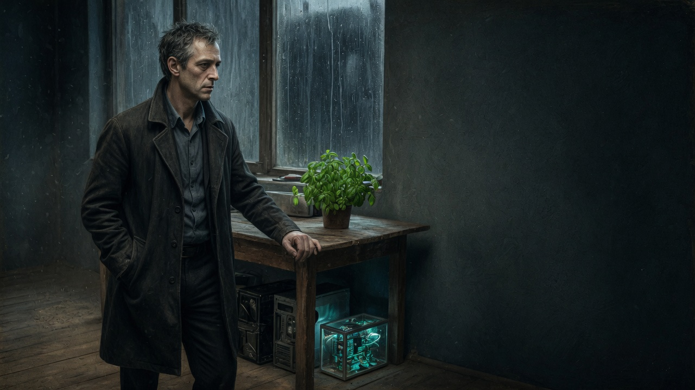

Floodlit Archive · Recovered civic record
A recovered civic record. Presentation is separated from the record.

Accession fault
Browsers block local chapter files unless they are served on this machine. From this folder, run the localhost server, then open the address it prints.
pwsh -File tools\serve.ps1